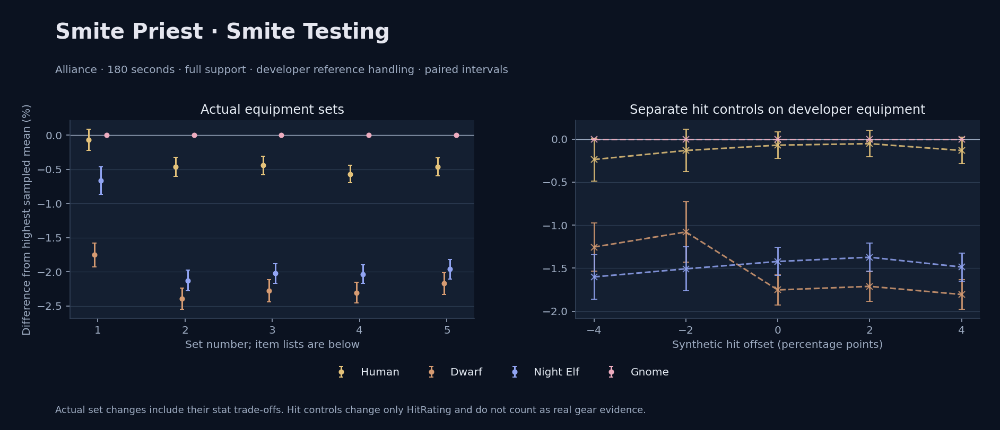

Alliance · Human / Dwarf / Night Elf / Gnome

No pet or guardian appears in the reference combat metrics. Reference: Human, developer equipment, 180 seconds and full support. Pet choices remain those of the developer build.
WoWSims developer · Smite Testing
180 seconds, full support and original developer references. Hit below is generic sheet melee / spell hit; school and talent bonuses can be attached directly to spells.
| Race | DPS | Gap and interval | Generic hit | Replay |
|---|---|---|---|---|
| Gnome | 419.64 | +0.000% ± 0.000 | 0.0% / 0.0% | Native input · Website JSON |
| Human | 419.35 | -0.071% ± 0.155 | 0.0% / 0.0% | Native input · Website JSON |
| Night Elf | 416.87 | -0.662% ± 0.201 | 0.0% / 0.0% | Native input · Website JSON |
| Dwarf | 412.29 | -1.752% ± 0.176 | 1.0% / 1.0% | Native input · Website JSON |
| Slot | Item | ID | Enchant |
|---|---|---|---|
| Head | Bad Hat | 260212 | |
| Neck | Chains of the Lich | 23125 | |
| Shoulder | Mantle of the Timbermaw | 19050 | |
| Back | Deep Woodlands Cloak | 19121 | |
| Chest | Ghostweave Vest | 14141 | |
| Wrist | Netherlight Cuffs | 254071 | |
| Hands | Radiant Gloves | 254105 | |
| Waist | Wisdom of the Timbermaw | 19047 | |
| Legs | Ghostweave Pants | 14144 | |
| Feet | Earthen Silk Slippers | 254013 | |
| Ring 1 | Jereman's Bauble | 275738 | |
| Ring 2 | Lorekeeper's Ring | 19523 | |
| Trinket 1 | Shard of the Splithooves | 10659 | |
| Trinket 2 | Jewel of the Guard Captain | 270225 | |
| Main hand | Wisepaw Totem | 274420 | |
| Ranged / relic | Brilliant Wand | 249385 |
Published ranked alternatives · Published pre-raid
Recorded source replacements: [{"slot": "back", "from": 11623, "to": 272411, "publishedAlternativeRank": 1, "publishedEpDelta": -0.8, "reason": "First published alternative compatible with the current WoWSims database, class, faction and occupied slots."}]
Unimplemented enchant or active set effects: [{"id": 181, "pieces": 2, "effects": ["+8 All Resistances."]}, {"id": 181, "pieces": 4, "effects": ["When struck in combat has a 2% chance of freezing the attacker in place for 3s. Can only occur once every 60 sec."]}]
Unmeasured proc rates: [{"source": "item", "id": 2243, "name": "Hand of Edward the Odd", "kind": "ppm", "origin": "vanilla"}]
180 seconds, full support and original developer references. Hit below is generic sheet melee / spell hit; school and talent bonuses can be attached directly to spells.
| Race | DPS | Gap and interval | Generic hit | Replay |
|---|---|---|---|---|
| Gnome | 498.54 | +0.000% ± 0.000 | 1.0% / 1.0% | Native input · Website JSON |
| Human | 496.21 | -0.467% ± 0.140 | 1.0% / 1.0% | Native input · Website JSON |
| Night Elf | 487.93 | -2.128% ± 0.151 | 1.0% / 1.0% | Native input · Website JSON |
| Dwarf | 486.62 | -2.391% ± 0.155 | 2.0% / 2.0% | Native input · Website JSON |
| Slot | Item | ID | Enchant |
|---|---|---|---|
| Head | Magister's Crown | 16686 | Arcanum of Focus |
| Neck | Archlight Talisman | 15856 | Enchant Necklace - Spell Power |
| Shoulder | Magister's Mantle | 16689 | |
| Back | Arcanoweave Cloak | 272411 | |
| Chest | Magister's Robes | 16688 | Mystic Rugged Armor Kit |
| Wrist | Magister's Bindings | 16683 | Enchant Bracer - Greater Spellpower |
| Hands | Magister's Gloves | 16684 | Enchant Gloves - Holy Power |
| Waist | Belt of the Archmage | 18405 | |
| Legs | Ghostweave Pants | 14144 | Arcanum of Focus |
| Feet | Magister's Boots | 16682 | Mystic Rugged Armor Kit |
| Ring 1 | Maiden's Circle | 13001 | |
| Ring 2 | Maiden's Circle | 13001 | |
| Trinket 1 | Weakness Analyzer | 272438 | |
| Trinket 2 | Shard of the Splithooves | 10659 | |
| Main hand | Hand of Edward the Odd | 2243 | |
| Off hand | Spirit of Aquementas | 11904 | Enchant Off-Hand - Excellent Spirit |
| Ranged / relic | Greater Eternal Wand | 249237 |
Published one-slot hit alternative · Published pre-raid
One source-listed alternative; at least 80% of the source slot score retained. Reported hit selects the contrast; only native stats determine simulation outcomes. This is an experimental combination, not an endorsed best set.
Recorded source replacements: [{"slot": "back", "from": 11623, "to": 272411, "publishedAlternativeRank": 1, "publishedEpDelta": -0.8, "reason": "First published alternative compatible with the current WoWSims database, class, faction and occupied slots."}]
Unimplemented enchant or active set effects: [{"id": 181, "pieces": 2, "effects": ["+8 All Resistances."]}, {"id": 181, "pieces": 4, "effects": ["When struck in combat has a 2% chance of freezing the attacker in place for 3s. Can only occur once every 60 sec."]}]
Unmeasured proc rates: [{"source": "item", "id": 2243, "name": "Hand of Edward the Odd", "kind": "ppm", "origin": "vanilla"}]
180 seconds, full support and original developer references. Hit below is generic sheet melee / spell hit; school and talent bonuses can be attached directly to spells.
| Race | DPS | Gap and interval | Generic hit | Replay |
|---|---|---|---|---|
| Gnome | 496.68 | +0.000% ± 0.000 | 0.0% / 0.0% | Native input · Website JSON |
| Human | 494.49 | -0.442% ± 0.135 | 0.0% / 0.0% | Native input · Website JSON |
| Night Elf | 486.64 | -2.023% ± 0.145 | 0.0% / 0.0% | Native input · Website JSON |
| Dwarf | 485.39 | -2.274% ± 0.162 | 1.0% / 1.0% | Native input · Website JSON |
| Slot | Item | ID | Enchant |
|---|---|---|---|
| Head | Magister's Crown | 16686 | Arcanum of Focus |
| Neck | Archlight Talisman | 15856 | Enchant Necklace - Spell Power |
| Shoulder | Magister's Mantle | 16689 | |
| Back | Hide of the Wild | 18510 | |
| Chest | Magister's Robes | 16688 | Mystic Rugged Armor Kit |
| Wrist | Magister's Bindings | 16683 | Enchant Bracer - Greater Spellpower |
| Hands | Magister's Gloves | 16684 | Enchant Gloves - Holy Power |
| Waist | Belt of the Archmage | 18405 | |
| Legs | Ghostweave Pants | 14144 | Arcanum of Focus |
| Feet | Magister's Boots | 16682 | Mystic Rugged Armor Kit |
| Ring 1 | Maiden's Circle | 13001 | |
| Ring 2 | Maiden's Circle | 13001 | |
| Trinket 1 | Weakness Analyzer | 272438 | |
| Trinket 2 | Shard of the Splithooves | 10659 | |
| Main hand | Hand of Edward the Odd | 2243 | |
| Off hand | Spirit of Aquementas | 11904 | Enchant Off-Hand - Excellent Spirit |
| Ranged / relic | Greater Eternal Wand | 249237 |
Published ranked alternatives · Published pre-raid
Recorded source replacements: [{"slot": "shoulder", "from": 227808, "to": 19050, "publishedAlternativeRank": 1, "publishedEpDelta": -11.2, "reason": "First published alternative compatible with the current WoWSims database, class, faction and occupied slots."}, {"slot": "back", "from": 11623, "to": 272411, "publishedAlternativeRank": 1, "publishedEpDelta": -0.8, "reason": "First published alternative compatible with the current WoWSims database, class, faction and occupied slots."}, {"slot": "waist", "from": 228190, "to": 18405, "publishedAlternativeRank": 1, "publishedEpDelta": -3, "reason": "First published alternative compatible with the current WoWSims database, class, faction and occupied slots."}]
Unimplemented enchant or active set effects: [{"id": 181, "pieces": 2, "effects": ["+8 All Resistances."]}, {"id": 181, "pieces": 4, "effects": ["When struck in combat has a 2% chance of freezing the attacker in place for 3s. Can only occur once every 60 sec."]}]
Unmeasured proc rates: [{"source": "item", "id": 2243, "name": "Hand of Edward the Odd", "kind": "ppm", "origin": "vanilla"}]
180 seconds, full support and original developer references. Hit below is generic sheet melee / spell hit; school and talent bonuses can be attached directly to spells.
| Race | DPS | Gap and interval | Generic hit | Replay |
|---|---|---|---|---|
| Gnome | 507.08 | +0.000% ± 0.000 | 1.9% / 1.9% | Native input · Website JSON |
| Human | 504.19 | -0.570% ± 0.129 | 1.9% / 1.9% | Native input · Website JSON |
| Night Elf | 496.77 | -2.033% ± 0.136 | 1.9% / 1.9% | Native input · Website JSON |
| Dwarf | 495.39 | -2.303% ± 0.151 | 2.9% / 2.9% | Native input · Website JSON |
| Slot | Item | ID | Enchant |
|---|---|---|---|
| Head | Magister's Crown | 16686 | Arcanum of Focus |
| Neck | Archlight Talisman | 15856 | Enchant Necklace - Spell Power |
| Shoulder | Mantle of the Timbermaw | 19050 | |
| Back | Arcanoweave Cloak | 272411 | |
| Chest | Magister's Robes | 16688 | Mystic Rugged Armor Kit |
| Wrist | Magister's Bindings | 16683 | Enchant Bracer - Greater Spellpower |
| Hands | Magister's Gloves | 16684 | Enchant Gloves - Holy Power |
| Waist | Belt of the Archmage | 18405 | |
| Legs | Magister's Leggings | 16687 | Arcanum of Focus |
| Feet | Magister's Boots | 16682 | Mystic Rugged Armor Kit |
| Ring 1 | Maiden's Circle | 13001 | |
| Ring 2 | Maiden's Circle | 13001 | |
| Trinket 1 | Weakness Analyzer | 272438 | |
| Trinket 2 | Shard of the Splithooves | 10659 | |
| Main hand | Hand of Edward the Odd | 2243 | |
| Off hand | Spirit of Aquementas | 11904 | Enchant Off-Hand - Excellent Spirit |
| Ranged / relic | Brilliant Wand | 249385 |
Published one-slot hit alternative · Published pre-raid
One source-listed alternative; at least 80% of the source slot score retained. Reported hit selects the contrast; only native stats determine simulation outcomes. This is an experimental combination, not an endorsed best set.
Recorded source replacements: [{"slot": "shoulder", "from": 227808, "to": 19050, "publishedAlternativeRank": 1, "publishedEpDelta": -11.2, "reason": "First published alternative compatible with the current WoWSims database, class, faction and occupied slots."}, {"slot": "back", "from": 11623, "to": 272411, "publishedAlternativeRank": 1, "publishedEpDelta": -0.8, "reason": "First published alternative compatible with the current WoWSims database, class, faction and occupied slots."}, {"slot": "waist", "from": 228190, "to": 18405, "publishedAlternativeRank": 1, "publishedEpDelta": -3, "reason": "First published alternative compatible with the current WoWSims database, class, faction and occupied slots."}]
Unimplemented enchant or active set effects: [{"id": 181, "pieces": 2, "effects": ["+8 All Resistances."]}, {"id": 181, "pieces": 4, "effects": ["When struck in combat has a 2% chance of freezing the attacker in place for 3s. Can only occur once every 60 sec."]}]
Unmeasured proc rates: [{"source": "item", "id": 2243, "name": "Hand of Edward the Odd", "kind": "ppm", "origin": "vanilla"}]
180 seconds, full support and original developer references. Hit below is generic sheet melee / spell hit; school and talent bonuses can be attached directly to spells.
| Race | DPS | Gap and interval | Generic hit | Replay |
|---|---|---|---|---|
| Gnome | 504.82 | +0.000% ± 0.000 | 0.9% / 0.9% | Native input · Website JSON |
| Human | 502.48 | -0.465% ± 0.130 | 0.9% / 0.9% | Native input · Website JSON |
| Night Elf | 494.92 | -1.962% ± 0.142 | 0.9% / 0.9% | Native input · Website JSON |
| Dwarf | 493.87 | -2.171% ± 0.155 | 1.9% / 1.9% | Native input · Website JSON |
| Slot | Item | ID | Enchant |
|---|---|---|---|
| Head | Magister's Crown | 16686 | Arcanum of Focus |
| Neck | Archlight Talisman | 15856 | Enchant Necklace - Spell Power |
| Shoulder | Mantle of the Timbermaw | 19050 | |
| Back | Hide of the Wild | 18510 | |
| Chest | Magister's Robes | 16688 | Mystic Rugged Armor Kit |
| Wrist | Magister's Bindings | 16683 | Enchant Bracer - Greater Spellpower |
| Hands | Magister's Gloves | 16684 | Enchant Gloves - Holy Power |
| Waist | Belt of the Archmage | 18405 | |
| Legs | Magister's Leggings | 16687 | Arcanum of Focus |
| Feet | Magister's Boots | 16682 | Mystic Rugged Armor Kit |
| Ring 1 | Maiden's Circle | 13001 | |
| Ring 2 | Maiden's Circle | 13001 | |
| Trinket 1 | Weakness Analyzer | 272438 | |
| Trinket 2 | Shard of the Splithooves | 10659 | |
| Main hand | Hand of Edward the Odd | 2243 | |
| Off hand | Spirit of Aquementas | 11904 | Enchant Off-Hand - Excellent Spirit |
| Ranged / relic | Brilliant Wand | 249385 |
The same declared pool is available to every race. Each race keeps its best validation-sample set with its screening-selected racial policy. Separate samples confirm that choice, with fresh precision samples near the practical-loss boundary. Gaps use the highest sampled mean under that same duration, support and reference treatment as their reference. A zero reference gap does not certify a race; the main matrix also allows uncertainty in the leader.
| Pool | Seconds | Support | References | Race | DPS | Gap and interval | Racial policies / mana | Selected set | Generic hit: melee / spell | Replay |
|---|---|---|---|---|---|---|---|---|---|---|
| published-pre-raid | 60 | full | developer | Night Elf | 584.55 | +0.000% ± 0.0005,000 iterations | developer / developer / damage-dpetMana waits 0.0s | published-priest-smite-alliance-b05916180892534f | 1.0% / 1.0% | Input · Result · Stats |
| published-pre-raid | 60 | full | developer | Gnome | 581.65 | -0.494% ± 0.0435,000 iterations | developer / developer / developerMana waits 0.0s | published-priest-smite-alliance-b05916180892534f | 1.0% / 1.0% | Input · Result · Stats |
| published-pre-raid | 60 | full | developer | Human | 580.39 | -0.710% ± 0.0455,000 iterations | developer / developer / developerMana waits 0.0s | published-priest-smite-alliance-b05916180892534f | 1.0% / 1.0% | Input · Result · Stats |
| published-pre-raid | 60 | full | developer | Dwarf | 578.43 | -1.045% ± 0.0525,000 iterations | developer / developer / developerMana waits 0.0s | published-priest-smite-alliance-b05916180892534f | 2.0% / 2.0% | Input · Result · Stats |
| published-pre-raid | 60 | full | explicit | Night Elf | 584.55 | +0.000% ± 0.0005,000 iterations | developer / developer / damage-dpetMana waits 0.0s | published-priest-smite-alliance-b05916180892534f | 1.0% / 1.0% | Input · Result · Stats |
| published-pre-raid | 60 | full | explicit | Gnome | 581.65 | -0.494% ± 0.0435,000 iterations | developer / developer / developerMana waits 0.0s | published-priest-smite-alliance-b05916180892534f | 1.0% / 1.0% | Input · Result · Stats |
| published-pre-raid | 60 | full | explicit | Human | 580.39 | -0.710% ± 0.0455,000 iterations | developer / developer / developerMana waits 0.0s | published-priest-smite-alliance-b05916180892534f | 1.0% / 1.0% | Input · Result · Stats |
| published-pre-raid | 60 | full | explicit | Dwarf | 578.43 | -1.045% ± 0.0525,000 iterations | developer / developer / developerMana waits 0.0s | published-priest-smite-alliance-b05916180892534f | 2.0% / 2.0% | Input · Result · Stats |
| published-pre-raid | 60 | self | developer | Gnome | 452.22 | +0.000% ± 0.0005,000 iterations | developer / developer / developerMana waits 0.0s | published-priest-smite-alliance-d845226177247d5f | 1.9% / 1.9% | Input · Result · Stats |
| published-pre-raid | 60 | self | developer | Night Elf | 447.90 | -0.955% ± 0.1285,000 iterations | developer / developer / damage-dpetMana waits 0.0s | published-priest-smite-alliance-d845226177247d5f | 1.9% / 1.9% | Input · Result · Stats |
| published-pre-raid | 60 | self | developer | Human | 444.66 | -1.672% ± 0.0655,000 iterations | developer / developer / developerMana waits 0.0s | published-priest-smite-alliance-d845226177247d5f | 1.9% / 1.9% | Input · Result · Stats |
| published-pre-raid | 60 | self | developer | Dwarf | 439.63 | -2.784% ± 0.0725,000 iterations | developer / developer / developerMana waits 0.0s | published-priest-smite-alliance-d845226177247d5f | 2.9% / 2.9% | Input · Result · Stats |
| published-pre-raid | 60 | self | explicit | Gnome | 452.22 | +0.000% ± 0.0005,000 iterations | developer / developer / developerMana waits 0.0s | published-priest-smite-alliance-d845226177247d5f | 1.9% / 1.9% | Input · Result · Stats |
| published-pre-raid | 60 | self | explicit | Night Elf | 447.90 | -0.955% ± 0.1285,000 iterations | developer / developer / damage-dpetMana waits 0.0s | published-priest-smite-alliance-d845226177247d5f | 1.9% / 1.9% | Input · Result · Stats |
| published-pre-raid | 60 | self | explicit | Human | 444.66 | -1.672% ± 0.0655,000 iterations | developer / developer / developerMana waits 0.0s | published-priest-smite-alliance-d845226177247d5f | 1.9% / 1.9% | Input · Result · Stats |
| published-pre-raid | 60 | self | explicit | Dwarf | 439.63 | -2.784% ± 0.0725,000 iterations | developer / developer / developerMana waits 0.0s | published-priest-smite-alliance-d845226177247d5f | 2.9% / 2.9% | Input · Result · Stats |
| published-pre-raid | 180 | full | developer | Gnome | 505.95 | +0.000% ± 0.0005,000 iterations | developer / developer / developerMana waits 0.0s | published-priest-smite-alliance-d845226177247d5f | 1.9% / 1.9% | Input · Result · Stats · Website JSON |
| published-pre-raid | 180 | full | developer | Human | 503.43 | -0.497% ± 0.0585,000 iterations | developer / developer / developerMana waits 0.0s | published-priest-smite-alliance-d845226177247d5f | 1.9% / 1.9% | Input · Result · Stats · Website JSON |
| published-pre-raid | 180 | full | developer | Night Elf | 495.96 | -1.974% ± 0.0645,000 iterations | developer / developer / developerMana waits 0.0s | published-priest-smite-alliance-d845226177247d5f | 1.9% / 1.9% | Input · Result · Stats · Website JSON |
| published-pre-raid | 180 | full | developer | Dwarf | 494.59 | -2.244% ± 0.0685,000 iterations | developer / developer / developerMana waits 0.0s | published-priest-smite-alliance-d845226177247d5f | 2.9% / 2.9% | Input · Result · Stats · Website JSON |
| published-pre-raid | 180 | full | explicit | Gnome | 505.95 | +0.000% ± 0.0005,000 iterations | developer / developer / developerMana waits 0.0s | published-priest-smite-alliance-d845226177247d5f | 1.9% / 1.9% | Input · Result · Stats |
| published-pre-raid | 180 | full | explicit | Human | 503.43 | -0.497% ± 0.0585,000 iterations | developer / developer / developerMana waits 0.0s | published-priest-smite-alliance-d845226177247d5f | 1.9% / 1.9% | Input · Result · Stats |
| published-pre-raid | 180 | full | explicit | Night Elf | 495.96 | -1.974% ± 0.0645,000 iterations | developer / developer / developerMana waits 0.0s | published-priest-smite-alliance-d845226177247d5f | 1.9% / 1.9% | Input · Result · Stats |
| published-pre-raid | 180 | full | explicit | Dwarf | 494.59 | -2.244% ± 0.0685,000 iterations | developer / developer / developerMana waits 0.0s | published-priest-smite-alliance-d845226177247d5f | 2.9% / 2.9% | Input · Result · Stats |
| published-pre-raid | 180 | self | developer | Night Elf | 286.61 | +0.000% ± 0.0005,000 iterations | developer / developer / damage-dpetMana waits 0.0s | published-priest-smite-alliance-d845226177247d5f | 1.9% / 1.9% | Input · Result · Stats |
| published-pre-raid | 180 | self | developer | Gnome | 281.21 | -1.883% ± 0.1005,000 iterations | developer / developer / developerMana waits 0.0s | published-priest-smite-alliance-d845226177247d5f | 1.9% / 1.9% | Input · Result · Stats |
| published-pre-raid | 180 | self | developer | Human | 278.51 | -2.827% ± 0.0995,000 iterations | developer / developer / developerMana waits 0.0s | published-priest-smite-alliance-d845226177247d5f | 1.9% / 1.9% | Input · Result · Stats |
| published-pre-raid | 180 | self | developer | Dwarf | 274.17 | -4.340% ± 0.1015,000 iterations | developer / developer / developerMana waits 0.0s | published-priest-smite-alliance-d845226177247d5f | 2.9% / 2.9% | Input · Result · Stats |
| published-pre-raid | 180 | self | explicit | Night Elf | 286.61 | +0.000% ± 0.0005,000 iterations | developer / developer / damage-dpetMana waits 0.0s | published-priest-smite-alliance-d845226177247d5f | 1.9% / 1.9% | Input · Result · Stats |
| published-pre-raid | 180 | self | explicit | Gnome | 281.21 | -1.883% ± 0.1005,000 iterations | developer / developer / developerMana waits 0.0s | published-priest-smite-alliance-d845226177247d5f | 1.9% / 1.9% | Input · Result · Stats |
| published-pre-raid | 180 | self | explicit | Human | 278.51 | -2.827% ± 0.0995,000 iterations | developer / developer / developerMana waits 0.0s | published-priest-smite-alliance-d845226177247d5f | 1.9% / 1.9% | Input · Result · Stats |
| published-pre-raid | 180 | self | explicit | Dwarf | 274.17 | -4.340% ± 0.1015,000 iterations | developer / developer / developerMana waits 0.0s | published-priest-smite-alliance-d845226177247d5f | 2.9% / 2.9% | Input · Result · Stats |
| published-pre-raid | 300 | full | developer | Human | 452.95 | +0.000% ± 0.0005,000 iterations | developer / developer / developerMana waits 0.0s | published-priest-smite-alliance-d845226177247d5f | 1.9% / 1.9% | Input · Result · Stats |
| published-pre-raid | 300 | full | developer | Gnome | 451.37 | -0.349% ± 0.0585,000 iterations | developer / developer / developerMana waits 0.0s | published-priest-smite-alliance-d845226177247d5f | 1.9% / 1.9% | Input · Result · Stats |
| published-pre-raid | 300 | full | developer | Night Elf | 445.06 | -1.741% ± 0.0605,000 iterations | developer / developer / developerMana waits 0.0s | published-priest-smite-alliance-d845226177247d5f | 1.9% / 1.9% | Input · Result · Stats |
| published-pre-raid | 300 | full | developer | Dwarf | 444.05 | -1.965% ± 0.0635,000 iterations | developer / developer / developerMana waits 0.0s | published-priest-smite-alliance-d845226177247d5f | 2.9% / 2.9% | Input · Result · Stats |
| published-pre-raid | 300 | full | explicit | Human | 452.95 | +0.000% ± 0.0005,000 iterations | developer / developer / developerMana waits 0.0s | published-priest-smite-alliance-d845226177247d5f | 1.9% / 1.9% | Input · Result · Stats |
| published-pre-raid | 300 | full | explicit | Gnome | 451.37 | -0.349% ± 0.0585,000 iterations | developer / developer / developerMana waits 0.0s | published-priest-smite-alliance-d845226177247d5f | 1.9% / 1.9% | Input · Result · Stats |
| published-pre-raid | 300 | full | explicit | Night Elf | 445.06 | -1.741% ± 0.0605,000 iterations | developer / developer / developerMana waits 0.0s | published-priest-smite-alliance-d845226177247d5f | 1.9% / 1.9% | Input · Result · Stats |
| published-pre-raid | 300 | full | explicit | Dwarf | 444.05 | -1.965% ± 0.0635,000 iterations | developer / developer / developerMana waits 0.0s | published-priest-smite-alliance-d845226177247d5f | 2.9% / 2.9% | Input · Result · Stats |
| published-pre-raid | 300 | self | developer | Night Elf | 247.22 | +0.000% ± 0.0005,000 iterations | developer / developer / damage-dpetMana waits 0.0s | published-priest-smite-alliance-d845226177247d5f | 1.9% / 1.9% | Input · Result · Stats |
| published-pre-raid | 300 | self | developer | Human | 244.27 | -1.192% ± 0.0755,000 iterations | developer / developer / developerMana waits 0.0s | published-priest-smite-alliance-d845226177247d5f | 1.9% / 1.9% | Input · Result · Stats |
| published-pre-raid | 300 | self | developer | Gnome | 243.81 | -1.378% ± 0.0745,000 iterations | developer / developer / developerMana waits 0.0s | published-priest-smite-alliance-d845226177247d5f | 1.9% / 1.9% | Input · Result · Stats |
| published-pre-raid | 300 | self | developer | Dwarf | 239.79 | -3.007% ± 0.0755,000 iterations | developer / developer / developerMana waits 0.0s | published-priest-smite-alliance-d845226177247d5f | 2.9% / 2.9% | Input · Result · Stats |
| published-pre-raid | 300 | self | explicit | Night Elf | 247.22 | +0.000% ± 0.0005,000 iterations | developer / developer / damage-dpetMana waits 0.0s | published-priest-smite-alliance-d845226177247d5f | 1.9% / 1.9% | Input · Result · Stats |
| published-pre-raid | 300 | self | explicit | Human | 244.27 | -1.192% ± 0.0755,000 iterations | developer / developer / developerMana waits 0.0s | published-priest-smite-alliance-d845226177247d5f | 1.9% / 1.9% | Input · Result · Stats |
| published-pre-raid | 300 | self | explicit | Gnome | 243.81 | -1.378% ± 0.0745,000 iterations | developer / developer / developerMana waits 0.0s | published-priest-smite-alliance-d845226177247d5f | 1.9% / 1.9% | Input · Result · Stats |
| published-pre-raid | 300 | self | explicit | Dwarf | 239.79 | -3.007% ± 0.0755,000 iterations | developer / developer / developerMana waits 0.0s | published-priest-smite-alliance-d845226177247d5f | 2.9% / 2.9% | Input · Result · Stats |
| developer-reference | 60 | full | developer | Night Elf | 524.39 | +0.000% ± 0.0005,000 iterations | developer / developer / developerMana waits 0.0s | developer | 0.0% / 0.0% | Input · Result · Stats |
| developer-reference | 60 | full | developer | Gnome | 521.98 | -0.460% ± 0.0425,000 iterations | developer / developer / developerMana waits 0.0s | developer | 0.0% / 0.0% | Input · Result · Stats |
| developer-reference | 60 | full | developer | Human | 520.83 | -0.678% ± 0.0455,000 iterations | developer / developer / developerMana waits 0.0s | developer | 0.0% / 0.0% | Input · Result · Stats |
| developer-reference | 60 | full | developer | Dwarf | 519.14 | -1.000% ± 0.0545,000 iterations | developer / developer / developerMana waits 0.0s | developer | 1.0% / 1.0% | Input · Result · Stats |
| developer-reference | 60 | full | explicit | Night Elf | 524.39 | +0.000% ± 0.0005,000 iterations | developer / developer / developerMana waits 0.0s | developer | 0.0% / 0.0% | Input · Result · Stats |
| developer-reference | 60 | full | explicit | Gnome | 521.98 | -0.460% ± 0.0425,000 iterations | developer / developer / developerMana waits 0.0s | developer | 0.0% / 0.0% | Input · Result · Stats |
| developer-reference | 60 | full | explicit | Human | 520.83 | -0.678% ± 0.0455,000 iterations | developer / developer / developerMana waits 0.0s | developer | 0.0% / 0.0% | Input · Result · Stats |
| developer-reference | 60 | full | explicit | Dwarf | 519.14 | -1.000% ± 0.0545,000 iterations | developer / developer / developerMana waits 0.0s | developer | 1.0% / 1.0% | Input · Result · Stats |
| developer-reference | 60 | self | developer | Night Elf | 381.90 | +0.000% ± 0.0005,000 iterations | developer / developer / damage-dpetMana waits 0.0s | developer | 0.0% / 0.0% | Input · Result · Stats |
| developer-reference | 60 | self | developer | Gnome | 378.90 | -0.786% ± 0.2085,000 iterations | developer / developer / developerMana waits 0.0s | developer | 0.0% / 0.0% | Input · Result · Stats |
| developer-reference | 60 | self | developer | Human | 353.10 | -7.541% ± 0.1815,000 iterations | developer / developer / developerMana waits 0.0s | developer | 0.0% / 0.0% | Input · Result · Stats |
| developer-reference | 60 | self | developer | Dwarf | 345.33 | -9.576% ± 0.2045,000 iterations | developer / developer / developerMana waits 0.0s | developer | 1.0% / 1.0% | Input · Result · Stats |
| developer-reference | 60 | self | explicit | Night Elf | 381.90 | +0.000% ± 0.0005,000 iterations | developer / developer / damage-dpetMana waits 0.0s | developer | 0.0% / 0.0% | Input · Result · Stats |
| developer-reference | 60 | self | explicit | Gnome | 378.90 | -0.786% ± 0.2085,000 iterations | developer / developer / developerMana waits 0.0s | developer | 0.0% / 0.0% | Input · Result · Stats |
| developer-reference | 60 | self | explicit | Human | 353.10 | -7.541% ± 0.1815,000 iterations | developer / developer / developerMana waits 0.0s | developer | 0.0% / 0.0% | Input · Result · Stats |
| developer-reference | 60 | self | explicit | Dwarf | 345.33 | -9.576% ± 0.2045,000 iterations | developer / developer / developerMana waits 0.0s | developer | 1.0% / 1.0% | Input · Result · Stats |
| developer-reference | 180 | full | developer | Gnome | 419.24 | +0.000% ± 0.0005,000 iterations | developer / developer / developerMana waits 0.0s | developer | 0.0% / 0.0% | Input · Result · Stats · Website JSON |
| developer-reference | 180 | full | developer | Human | 418.74 | -0.119% ± 0.0655,000 iterations | developer / developer / developerMana waits 0.0s | developer | 0.0% / 0.0% | Input · Result · Stats · Website JSON |
| developer-reference | 180 | full | developer | Night Elf | 416.65 | -0.617% ± 0.0875,000 iterations | developer / developer / damage-dpetMana waits 0.0s | developer | 0.0% / 0.0% | Input · Result · Stats · Website JSON |
| developer-reference | 180 | full | developer | Dwarf | 411.67 | -1.805% ± 0.0775,000 iterations | developer / developer / developerMana waits 0.0s | developer | 1.0% / 1.0% | Input · Result · Stats · Website JSON |
| developer-reference | 180 | full | explicit | Gnome | 419.24 | +0.000% ± 0.0005,000 iterations | developer / developer / developerMana waits 0.0s | developer | 0.0% / 0.0% | Input · Result · Stats |
| developer-reference | 180 | full | explicit | Human | 418.74 | -0.119% ± 0.0655,000 iterations | developer / developer / developerMana waits 0.0s | developer | 0.0% / 0.0% | Input · Result · Stats |
| developer-reference | 180 | full | explicit | Night Elf | 416.65 | -0.617% ± 0.0875,000 iterations | developer / developer / damage-dpetMana waits 0.0s | developer | 0.0% / 0.0% | Input · Result · Stats |
| developer-reference | 180 | full | explicit | Dwarf | 411.67 | -1.805% ± 0.0775,000 iterations | developer / developer / developerMana waits 0.0s | developer | 1.0% / 1.0% | Input · Result · Stats |
| developer-reference | 180 | self | developer | Night Elf | 241.05 | +0.000% ± 0.0005,000 iterations | developer / developer / damage-dpetMana waits 0.0s | developer | 0.0% / 0.0% | Input · Result · Stats |
| developer-reference | 180 | self | developer | Gnome | 239.05 | -0.828% ± 0.1065,000 iterations | developer / developer / developerMana waits 0.0s | developer | 0.0% / 0.0% | Input · Result · Stats |
| developer-reference | 180 | self | developer | Human | 230.06 | -4.558% ± 0.1205,000 iterations | developer / developer / developerMana waits 0.0s | developer | 0.0% / 0.0% | Input · Result · Stats |
| developer-reference | 180 | self | developer | Dwarf | 228.76 | -5.098% ± 0.1145,000 iterations | developer / developer / developerMana waits 0.0s | developer | 1.0% / 1.0% | Input · Result · Stats |
| developer-reference | 180 | self | explicit | Night Elf | 241.05 | +0.000% ± 0.0005,000 iterations | developer / developer / damage-dpetMana waits 0.0s | developer | 0.0% / 0.0% | Input · Result · Stats |
| developer-reference | 180 | self | explicit | Gnome | 239.05 | -0.828% ± 0.1065,000 iterations | developer / developer / developerMana waits 0.0s | developer | 0.0% / 0.0% | Input · Result · Stats |
| developer-reference | 180 | self | explicit | Human | 230.06 | -4.558% ± 0.1205,000 iterations | developer / developer / developerMana waits 0.0s | developer | 0.0% / 0.0% | Input · Result · Stats |
| developer-reference | 180 | self | explicit | Dwarf | 228.76 | -5.098% ± 0.1145,000 iterations | developer / developer / developerMana waits 0.0s | developer | 1.0% / 1.0% | Input · Result · Stats |
| developer-reference | 300 | full | developer | Human | 383.13 | +0.000% ± 0.0005,000 iterations | developer / developer / developerMana waits 0.0s | developer | 0.0% / 0.0% | Input · Result · Stats |
| developer-reference | 300 | full | developer | Gnome | 381.04 | -0.544% ± 0.0615,000 iterations | developer / developer / developerMana waits 0.0s | developer | 0.0% / 0.0% | Input · Result · Stats |
| developer-reference | 300 | full | developer | Night Elf | 379.20 | -1.024% ± 0.0735,000 iterations | developer / developer / damage-dpetMana waits 0.0s | developer | 0.0% / 0.0% | Input · Result · Stats |
| developer-reference | 300 | full | developer | Dwarf | 376.16 | -1.819% ± 0.0675,000 iterations | developer / developer / developerMana waits 0.0s | developer | 1.0% / 1.0% | Input · Result · Stats |
| developer-reference | 300 | full | explicit | Human | 383.13 | +0.000% ± 0.0005,000 iterations | developer / developer / developerMana waits 0.0s | developer | 0.0% / 0.0% | Input · Result · Stats |
| developer-reference | 300 | full | explicit | Gnome | 381.04 | -0.544% ± 0.0615,000 iterations | developer / developer / developerMana waits 0.0s | developer | 0.0% / 0.0% | Input · Result · Stats |
| developer-reference | 300 | full | explicit | Night Elf | 379.20 | -1.024% ± 0.0735,000 iterations | developer / developer / damage-dpetMana waits 0.0s | developer | 0.0% / 0.0% | Input · Result · Stats |
| developer-reference | 300 | full | explicit | Dwarf | 376.16 | -1.819% ± 0.0675,000 iterations | developer / developer / developerMana waits 0.0s | developer | 1.0% / 1.0% | Input · Result · Stats |
| developer-reference | 300 | self | developer | Night Elf | 212.94 | +0.000% ± 0.0005,000 iterations | developer / developer / damage-dpetMana waits 0.0s | developer | 0.0% / 0.0% | Input · Result · Stats |
| developer-reference | 300 | self | developer | Gnome | 211.02 | -0.902% ± 0.0755,000 iterations | developer / developer / developerMana waits 0.0s | developer | 0.0% / 0.0% | Input · Result · Stats |
| developer-reference | 300 | self | developer | Human | 207.10 | -2.742% ± 0.0825,000 iterations | developer / developer / developerMana waits 0.0s | developer | 0.0% / 0.0% | Input · Result · Stats |
| developer-reference | 300 | self | developer | Dwarf | 205.36 | -3.558% ± 0.0825,000 iterations | developer / developer / developerMana waits 0.0s | developer | 1.0% / 1.0% | Input · Result · Stats |
| developer-reference | 300 | self | explicit | Night Elf | 212.94 | +0.000% ± 0.0005,000 iterations | developer / developer / damage-dpetMana waits 0.0s | developer | 0.0% / 0.0% | Input · Result · Stats |
| developer-reference | 300 | self | explicit | Gnome | 211.02 | -0.902% ± 0.0755,000 iterations | developer / developer / developerMana waits 0.0s | developer | 0.0% / 0.0% | Input · Result · Stats |
| developer-reference | 300 | self | explicit | Human | 207.10 | -2.742% ± 0.0825,000 iterations | developer / developer / developerMana waits 0.0s | developer | 0.0% / 0.0% | Input · Result · Stats |
| developer-reference | 300 | self | explicit | Dwarf | 205.36 | -3.558% ± 0.0825,000 iterations | developer / developer / developerMana waits 0.0s | developer | 1.0% / 1.0% | Input · Result · Stats |
180 seconds, full support and the developer equipment anchor. These checks test creature sensitivity without a full gear search.
| Target | References | Race | DPS | Gap and interval | Replay |
|---|---|---|---|---|---|
| beast | developer | Dwarf | 430.48 | +0.000% ± 0.000 | Input · Result |
| beast | developer | Gnome | 419.64 | -2.516% ± 0.174 | Input · Result |
| beast | developer | Human | 419.35 | -2.586% ± 0.169 | Input · Result |
| beast | developer | Night Elf | 413.68 | -3.903% ± 0.146 | Input · Result |
| beast | explicit | Dwarf | 430.48 | +0.000% ± 0.000 | Input · Result |
| beast | explicit | Gnome | 419.64 | -2.516% ± 0.174 | Input · Result |
| beast | explicit | Human | 419.35 | -2.586% ± 0.169 | Input · Result |
| beast | explicit | Night Elf | 413.68 | -3.903% ± 0.146 | Input · Result |
| elemental | developer | Gnome | 419.64 | +0.000% ± 0.000 | Input · Result |
| elemental | developer | Human | 419.35 | -0.071% ± 0.155 | Input · Result |
| elemental | developer | Night Elf | 413.68 | -1.422% ± 0.163 | Input · Result |
| elemental | developer | Dwarf | 412.29 | -1.752% ± 0.176 | Input · Result |
| elemental | explicit | Gnome | 419.64 | +0.000% ± 0.000 | Input · Result |
| elemental | explicit | Human | 419.35 | -0.071% ± 0.155 | Input · Result |
| elemental | explicit | Night Elf | 413.68 | -1.422% ± 0.163 | Input · Result |
| elemental | explicit | Dwarf | 412.29 | -1.752% ± 0.176 | Input · Result |
Some equipment has unimplemented enchant or set effects; Some equipment uses unmeasured proc rates
Some items may display and use stats a litle higher than their original value.; Procs from Weapons, Trinkets and other Items are not yet supported
These known-issue notes are source context. Runtime checks establish current cast coverage, including Mutilate. They do not prove every mechanic matches the game.